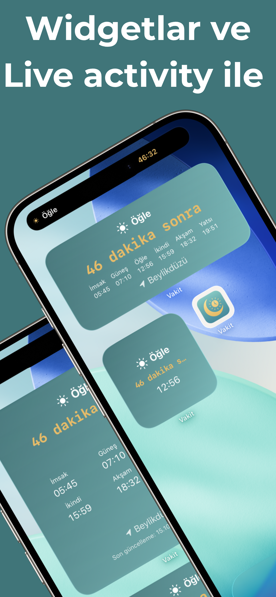
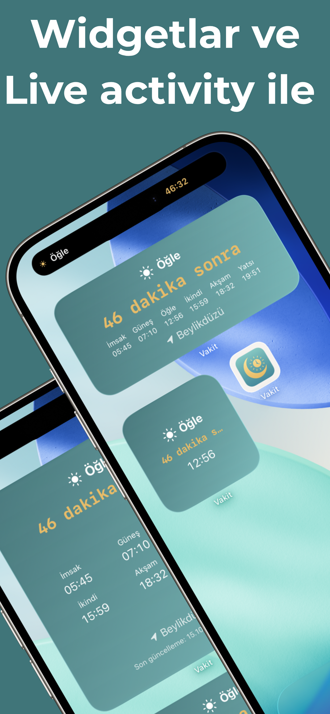

Namaz Vakitleri
Kolay Kullanım
Vakit uygulaması ile namaz vakitlerini kolayca öğrenin. Kıble yönünü bulun. Bildirim alın. Basit ve kolay kullanım. Namaz vakti, kıble yönü, hicri takvim ve internet olmadan çalışma özellikleri.
📱 Kolay Kullanım
📠Konum Bulma
🕌 Kıble Yönü
📅 Hicri Takvim
📶 İnternet Olmadan

 
